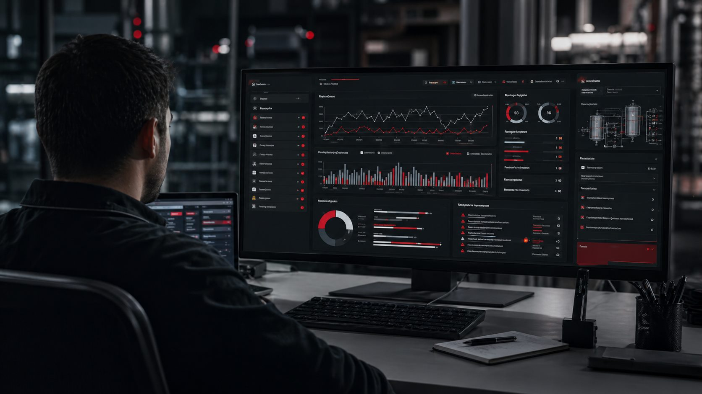

O próximo salto da operação industrial não começa no relatório. Começa no chão de fábrica.
Toda planta industrial já produz dados. Eles estão no CLP, nos inversores, nas IHMs, nos alarmes, no supervisório, nos sensores, nos apontamentos de produção e até nas rotinas manuais da equipe. O problema é que, muitas vezes, essas informações ficam espalhadas, atrasadas ou sem contexto suficiente para apoiar uma decisão rápida.
Produção integrada é o movimento de aproximar operação, automação, manutenção e gestão por meio de dados confiáveis. Não se trata apenas de colocar uma tela bonita em um dashboard, mas de criar uma cadeia técnica em que o sinal certo seja coletado, tratado, apresentado e usado para reduzir falhas, melhorar disponibilidade e sustentar decisões de campo.
Indústria 4.0 só gera resultado quando a base está bem feita: sinais validados, tags organizadas, comunicação estável, alarmes úteis e indicadores conectados à rotina real da planta.

Por que esse tema está no centro da indústria?
Estudos recentes sobre operações inteligentes apontam uma direção clara: fabricantes que integram dados, pessoas e processos ganham mais visibilidade sobre o fluxo produtivo, reduzem desperdícios e respondem melhor a variações de demanda, qualidade e manutenção.
Na prática, isso significa sair de uma operação reativa, que descobre o problema depois da parada, para uma operação mais orientada por evidências: quando ocorreu, em qual equipamento, por quanto tempo, em qual condição, com qual alarme associado e qual foi o impacto no processo.
O caminho prático: do CLP ao dashboard operacional.
Mapear variáveis críticas
Definir quais sinais realmente indicam produção, disponibilidade, falha, ciclo, qualidade ou segurança operacional.
Integrar sistemas industriais
Conectar CLP, IHM, SCADA, inversores, redes industriais, banco de dados e ferramentas de visualização.
Dar contexto ao dado
Relacionar evento, alarme, estado de máquina, turno, lote, operador, linha e tempo de parada.
Transformar dado em ação
Usar indicadores para priorizar manutenção, corrigir gargalos, reduzir recorrências e melhorar a tomada de decisão.

Onde a RBB Automação entra nesse processo?
A RBB atua na ponte entre automação e operação. Nosso papel é olhar para o sistema industrial com leitura de campo: entender o processo, revisar a base elétrica e de automação, validar sinais, integrar sistemas e entregar informações úteis para quem precisa agir.
Isso pode envolver retrofit de CLP, desenvolvimento de IHM e supervisório, integração de dados com Node-RED, MQTT ou banco de dados, criação de dashboards, revisão de alarmes, parametrização de inversores e comissionamento de pontos críticos para garantir que a informação represente o comportamento real da planta.
Aplicações com impacto direto
- Monitoramento de disponibilidade, paradas e tempo de ciclo.
- Dashboards para produção, manutenção e gestão operacional.
- Histórico de alarmes com causa provável e recorrência.
- Integração entre CLP, SCADA, IHM, inversores e bancos de dados.
- Indicadores para manutenção preventiva, análise de falhas e melhoria contínua.
- Visibilidade para plantas industriais, utilidades e operações offshore no Rio de Janeiro.
Conclusão: dado industrial precisa virar decisão.
O valor não está apenas em coletar mais dados. Está em selecionar os dados certos, conectá-los ao processo e apresentá-los de forma objetiva para quem precisa decidir. Quando automação, manutenção e operação trabalham com a mesma leitura, a planta ganha previsibilidade.
Para a RBB Automação, produção integrada é isso: técnica aplicada, leitura operacional e informação confiável para reduzir paradas, melhorar controle e sustentar resultado em campo.
Este conteúdo é autoral da RBB Automação e foi inspirado em discussões públicas sobre operações inteligentes na produção, incluindo material da Zebra Technologies sobre produção integrada e uso de dados industriais.
Ver referência da Zebra Technologies